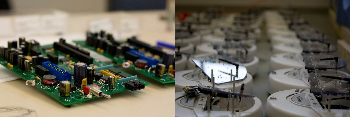
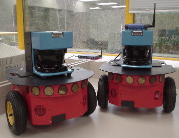
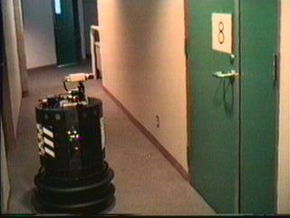
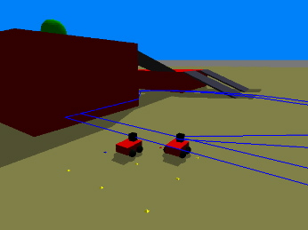

Custom robots
We aim to build a series of long-lived robot creatures great and small. Our first generation consists of 30 Chatterbox robots; based on the iRobot Create mobile platform, the Chatterboxes feature stereo microphones and speakers for communication with each other and with humans. They also signal using 4 24-bit colour LEDs, have IR sensors to detect obstacles, an ambient light sensors, and can recharge themselves.

Some Chatterboxes showing their multi-colour LEDs
These robots allow us to verify our simulated energy-management experiments with real robots as well as providing a platform for a variety of Human-Robot interaction experiments.

After several long days of soldering, we had proudly assembled the Chatterboxes
A gumstix stack running Linux® furnishes computing power and wireless access for the robot while the iRobot® Create base provides mobilty, basic sensing, and recharging capability. A custom-made interface board allows for additional sensors, actuators, and breakouts; schematics and part-lists for this board will be made available under an open-source license. Interfacing is via our RAPI open-source library.
The Chatterboxes were designed and prototyped by Jens Wawerla and Ash Charles, then built by the lab.
Commercial robots
The lab has two Pioneer 3-DX multi-purpose research robots from ActivMedia. These are equipped with onboard Linux computers, front and rear sonar arrays, SICK laser range scanners, 802.11 WiFi networking and IRDA serial communications.
For interfacing and control, the Pioneers run Player.

Roy and Priss, our Pioneer 3-DX robots with SICK LMS200 scanning laser rangefinders
We also have a venerable Nomad 200 mobile robot on loan from the Vision and Media Lab thanks to Prof. Ze-Nian Li. Mother is retrofitted with an 800MHz Mini-ITX VIA computer running Player for high-level control. Our Nomad 200 driver was contributed to Player.

Mother, our Nomad 200 in action at the VML.
Simulated robots
We use Stage for large-scale robot experiments, and its cousin Gazebo (by Andrew Howard and Nate Koenig of USC) for experiments with realistic dynamics and three-dimensional terrain.

Multiple 2D simulated robots in
Stage.

Multiple 3D simulated robots in Gazebo.
Robot Infrastructure
Player, Stage and Gazebo are products of the Player Project. Lab director Richard Vaughan is a founding member of the Player Project, co-designer of Player and lead developer of Stage.